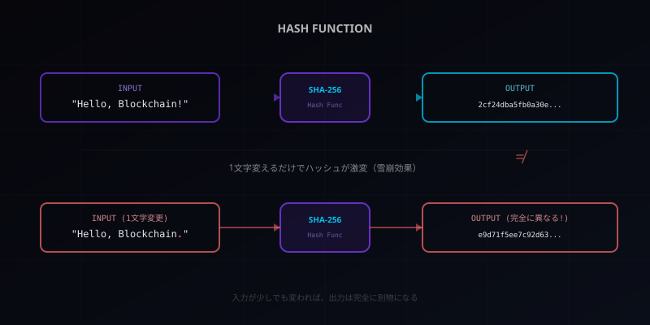
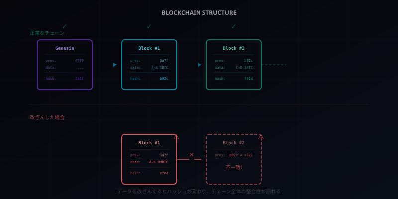

ブロックチェーン入門【前編】― 「改ざんできない台帳」を図解で完全理解する

「ブロックチェーン」という言葉、ニュースでよく聞くけれどよくわからない――そんな方のために、比喩と図解を使って一つずつ積み上げていきます。この記事を読み終えるころには、仕組みの本質がしっかり見えているはずです。
ブロックチェーンを一言で言うと？
ブロックチェーンとは、ひとことで言えば「みんなで同じノートを持ち合う仕組み」だ。
銀行を思い浮かべてほしい。あなたの預金残高は、銀行のシステムの中に「1冊の通帳」として記録されている。この通帳を管理しているのは銀行だけだ。銀行が「あなたの残高は100万円です」と言えば、それが事実になる。これが中央管理型の仕組みだ。
では、もしこの通帳のコピーを全員が持っていたらどうなるか？
たとえば、あなた、友人A、友人B、友人Cの4人が、まったく同じ内容の通帳を持っているとする。誰かが「自分の残高を100万円から1億円に書き換えた」としても、他の3人の通帳には「100万円」と書いてある。1人だけ違う→ 改ざんがバレる。
これがブロックチェーンの根本的な発想だ。中央の管理者を置かず、参加者全員がデータのコピーを持つことで、不正を困難にする。
ただし、「全員が同じコピーを持つ」だけでは不十分だ。コピーの中身が本当に正しいかどうかを検証する仕組みが必要になる。その検証を可能にするのが、次に説明する「ハッシュ」という技術だ。
ハッシュ ― データの「指紋」
ハッシュとは、データの「指紋」のようなものだ。
人間の指紋を想像してほしい。指紋には3つの特徴がある。
- 一人ひとり違う ― 同じ指紋の人はいない
- いつ採取しても同じ ― 同じ指からは同じ指紋が取れる
- 指紋から元の人を復元できない ― 指紋だけ見ても誰のものかわからない
ハッシュ関数は、これとまったく同じ性質を持つ。どんなデータ（テキスト、画像、動画など）を入れても、固定長の文字列（ハッシュ値）に変換する。同じデータからは必ず同じハッシュ値が出るが、ハッシュ値から元のデータを復元することはできない。
そして最も重要な性質がある。入力を1文字でも変えると、ハッシュ値がまったく別物になる。これを「雪崩効果（アバランシェ効果）」と呼ぶ。

この性質があるからこそ、「データが改ざんされていないか」を瞬時に検証できる。元のデータのハッシュ値を知っていれば、受け取ったデータのハッシュ値と比較するだけでいい。一致すれば改ざんなし、不一致なら改ざんありだ。
ブロックとチェーン ― 「前のページの指紋を書く」ルール
ここまでの知識を組み合わせると、ブロックチェーンの核心が見えてくる。
ノートの比喩に戻ろう。ノートの各ページに取引記録を書き込むとする。このページ1枚1枚が「ブロック」だ。
各ブロックには、次の3つの情報が含まれる。
- 取引データ ― 「AさんがBさんに1BTC送った」などの記録
- 自分のハッシュ値 ― このブロック全体の「指紋」
- 前のブロックのハッシュ値 ― 1つ前のページの「指紋」
3番目がポイントだ。各ブロックは、前のブロックの指紋（ハッシュ値）を必ず含む。だからブロック同士が鎖（チェーン）のようにつながる。これが「ブロックチェーン」という名前の由来だ。
では、悪意のある人がBlock #1の取引データを書き換えたらどうなるか？
データが変わると、Block #1のハッシュ値も変わる（雪崩効果！）。するとBlock #2には「Block #1のハッシュ値はb92c」と書いてあるのに、実際のBlock #1のハッシュ値は別の値になっている。不一致が発覚する。
じゃあBlock #2のデータも書き換えれば？ そうするとBlock #2のハッシュ値も変わり、Block #3との整合性が崩れる。つまり、1つのブロックを改ざんすると、後続のすべてのブロックを書き換える必要がある。そしてこの書き換えは、次に説明する「分散ネットワーク」と「合意形成」によって、事実上不可能になっている。

ここまで理解できれば、もう半分以上は押さえたも同然です。「ハッシュでデータの指紋を取る」→「各ブロックに前のブロックの指紋を書く」→「だから改ざんすると後ろ全部ズレる」。このロジック、シンプルですよね。
分散ネットワーク ― なぜ「中央」がいらないのか
ブロックチェーンのもう一つの柱が分散ネットワークだ。
従来のシステムは「中央集権型」だ。銀行、SNS、ECサイト——すべて1つの会社（中央）がサーバーを管理し、データを保管している。これは効率的だが、弱点がある。
- 単一障害点 ― 中央のサーバーがダウンすると、全員が使えなくなる
- 権力の集中 ― 管理者がデータを書き換えたり、アクセスを拒否したりできる
- 攻撃対象 ― ハッカーは中央のサーバー1つを狙えばいい
ブロックチェーンはこれを逆転させる。データを1箇所に置くのではなく、ネットワークに参加するすべてのコンピュータ（ノード）が同じデータのコピーを持つ。
わかりやすい比喩で言えば、こういうことだ。
中央集権型は「町内会の回覧板」。1冊しかないから、回ってこないと情報がわからない。紛失したら終わりだ。分散型は「全員がコピーを持つLINEグループ」。全員が同じ情報を同時に持っている。誰かのスマホが壊れても、他の全員のスマホに情報が残っている。
ブロックチェーンのネットワークでは、新しいブロックが作られると、すべてのノードに配信される。各ノードは受け取ったブロックを検証し、問題がなければ自分のコピーに追加する。こうして、世界中に散らばった何千ものコンピュータが、同じ台帳を共有し続ける。

技術的にはP2P（Peer-to-Peer）ネットワークと呼ばれる構成だ。BitTorrentと同じ原理で、参加者同士が直接通信する。中央サーバーがないから「誰かに止められる」ことがない。ビットコインのノード数は現在約1万8千台。これを全部ハッキングするのは事実上不可能だ。
合意形成 ― みんなで「正しい」と決める方法
ここで一つ問題が生じる。中央の管理者がいないなら、誰が「このデータは正しい」と決めるのか？
答えは「みんなで決める」だ。これを合意形成（コンセンサス）と呼ぶ。
合意形成にはいくつかの方法があるが、代表的な2つを紹介する。
PoW（Proof of Work / 仕事の証明）
ビットコインが採用している方式だ。比喩で言えば、「超難しいパズルを最初に解いた人が、次のブロックを書く権利を得る」仕組みだ。
このパズルは計算量が膨大で、解くには大量の電力と計算機が必要になる。しかし解答の正しさを検証するのは一瞬でできる（ハッシュ値を1回計算するだけ）。パズルを解く作業が「マイニング（採掘）」と呼ばれるもので、解いた人には報酬として新しい暗号通貨が与えられる。
なぜこれが不正を防ぐのか？ 不正をするには、自分だけで全ネットワークの計算力の過半数を持つ必要がある。これを51%攻撃と呼ぶが、現実的にはビットコインネットワーク全体の51%の計算力を確保するには、小国の電力消費量に匹敵するコストがかかる。やるだけ損だ。
PoS（Proof of Stake / 持分の証明）
Ethereum（イーサリアム）が2022年に移行した方式だ。比喩で言えば、「保証金を預けた人の中から、ランダムにブロック作成者を選ぶ」仕組みだ。
不正をすると保証金（ステーク）が没収されるため、不正する動機がなくなる。PoWと比べて電力消費が99%以上削減できるのが大きな利点だ。
合意形成は名前が難しそうですが、要は「みんなで不正ができないルールを決める」ということ。PoWは「膨大な労力をかけた人を信頼する」、PoSは「お金を預けた人を信頼する」。どちらも「不正するより正直にやるほうが得」という経済的インセンティブ設計なんです。
ビットコインだけじゃない ― ブロックチェーンの使い道
ブロックチェーン＝仮想通貨、と思っている人は多い。だが仮想通貨は、ブロックチェーン技術の最初のユースケースに過ぎない。
ブロックチェーンの本質は「信頼のインフラ」だ。「改ざんできない記録を、中央の管理者なしで共有する」——この能力は、さまざまな分野に応用できる。
スマートコントラクト
「自動販売機」を想像してほしい。お金を入れてボタンを押せば、人間の介在なしに商品が出てくる。スマートコントラクトは、これのデジタル版だ。「条件Aが満たされたら、自動的にBを実行する」というプログラムをブロックチェーン上に置く。契約の実行に仲介者が不要になる。
NFT（非代替性トークン）
デジタルアートや限定アイテムの「所有証明書」をブロックチェーンに記録する。コピーは自由にできるが、「本物の所有者は誰か」がチェーン上に不変に記録される。
サプライチェーン管理
食品がどこの農場で作られ、どの倉庫を経由し、いつ店頭に並んだか。この流通経路をブロックチェーンに記録すれば、改ざんできない追跡が可能になる。食品偽装や偽ブランド品の防止に活用されている。
電子投票
投票結果をブロックチェーンに記録すれば、「票の改ざん」や「二重投票」を技術的に防げる。透明性と匿名性を両立できる可能性がある。
DeFi（分散型金融）
銀行や証券会社を介さずに、貸し借り、両替、保険などの金融サービスをブロックチェーン上で実現する。24時間365日、誰でもアクセスできる金融インフラだ。
スマートコントラクトの登場は技術的に大きな転換点だった。ビットコインのブロックチェーンは「台帳」だが、Ethereumのブロックチェーンは「プログラムを実行できるコンピュータ」だ。この違いがDeFiやNFTを可能にした。興味がある人はSolidityという言語を覗いてみるといい。
ブロックチェーンの限界と誤解
ブロックチェーンは万能ではない。この技術を正しく評価するために、限界と誤解を整理しておこう。
処理速度の課題
Visaのクレジットカード決済は毎秒約65,000件を処理できる。一方、ビットコインは毎秒約7件だ。分散で検証するという仕組み上、中央集権型のシステムに処理速度で勝つのは難しい。Layer 2ソリューション（Lightning Networkなど）やシャーディングといった技術で改善が進んでいるが、完全に解決されたわけではない。
エネルギー問題
PoW（Proof of Work）は膨大な電力を消費する。ビットコインのマイニングに使われる電力は、一部の国の電力消費量を超えるほどだ。この問題に対応するため、EthereumはPoW→PoSに移行し、エネルギー消費を99.95%削減した。ただしPoSにも「富の集中」という別の課題がある。
「ブロックチェーンに載せれば安全」は誤り
ブロックチェーンは「記録の改ざん」を防ぐが、「最初に記録するデータが正しいか」は保証しない。嘘のデータをブロックチェーンに記録すれば、その嘘が改ざんできない形で残るだけだ。入口の品質は人間が担保する必要がある。
向いている用途 / 向いていない用途
ブロックチェーンが力を発揮するのは、「複数の組織間で、信頼できる第三者なしにデータを共有する必要がある」場面だ。逆に、1つの組織が管理すれば済むデータベースにブロックチェーンを使うのは過剰設計だ。
エンジニア視点で言うと、「そのシステムに本当にブロックチェーンが必要か？」は常に問うべきだ。判断基準は3つ。(1)複数の主体がデータを共有するか、(2)信頼できる中央管理者がいないか、(3)データの改ざん耐性が必要か。3つとも当てはまるなら検討の価値がある。1つでも当てはまらなければ、普通のデータベースのほうが速くて安い。
まとめ
この記事で学んだことを3つに絞る。
- ブロックチェーンは「みんなで同じ台帳を持つ」仕組み。中央の管理者がいなくても、全員がコピーを持つことで改ざんを困難にする
- ハッシュとチェーンで整合性を保証する。各ブロックに前のブロックのハッシュ値を含めることで、1つでも改ざんすればチェーン全体の不整合が発覚する
- 合意形成で「正しさ」を決める。PoWやPoSなどのルールによって、中央管理者なしでも全員が同じ結論に至る仕組みを実現している
さらに学びたい方のために、関連キーワードを整理しておく。
| キーワード | 概要 |
|---|---|
| SHA-256 | ビットコインで使われるハッシュ関数。256ビットの固定長出力 |
| マイニング | PoWにおける新ブロック作成作業。計算パズルを解いて報酬を得る |
| スマートコントラクト | ブロックチェーン上で自動実行されるプログラム。Ethereumが先駆 |
| 51%攻撃 | ネットワークの過半数を支配する攻撃。理論上の脅威だが現実には極めて困難 |
| Layer 2 | メインチェーンの外で取引を処理し、処理速度を向上させる技術 |
ハッシュ→ブロック→チェーン→分散→合意。この5つを覚えれば、ブロックチェーンの本質は理解できています。新しいサービスや技術が出てきたときに「あ、これはブロックチェーンのここに関わる話だな」と見抜けるようになるはずです。
技術の仕組みがわかれば、どんな新サービスが出てきても自分で評価できる。「このプロジェクトは本当にブロックチェーンが必要なのか？」を問える人は、投資判断でも技術選定でも強い。仕組みを知ることが、最大のリスクヘッジだ。
補足すると、ブロックチェーンで使われるハッシュ関数は主にSHA-256（SHA = Secure Hash Algorithm）。出力は常に256ビット（16進数で64文字）になる。Linuxの
sha256sumコマンドやPythonのhashlibで簡単に試せるので、気になる人は実際に動かしてみるといい。